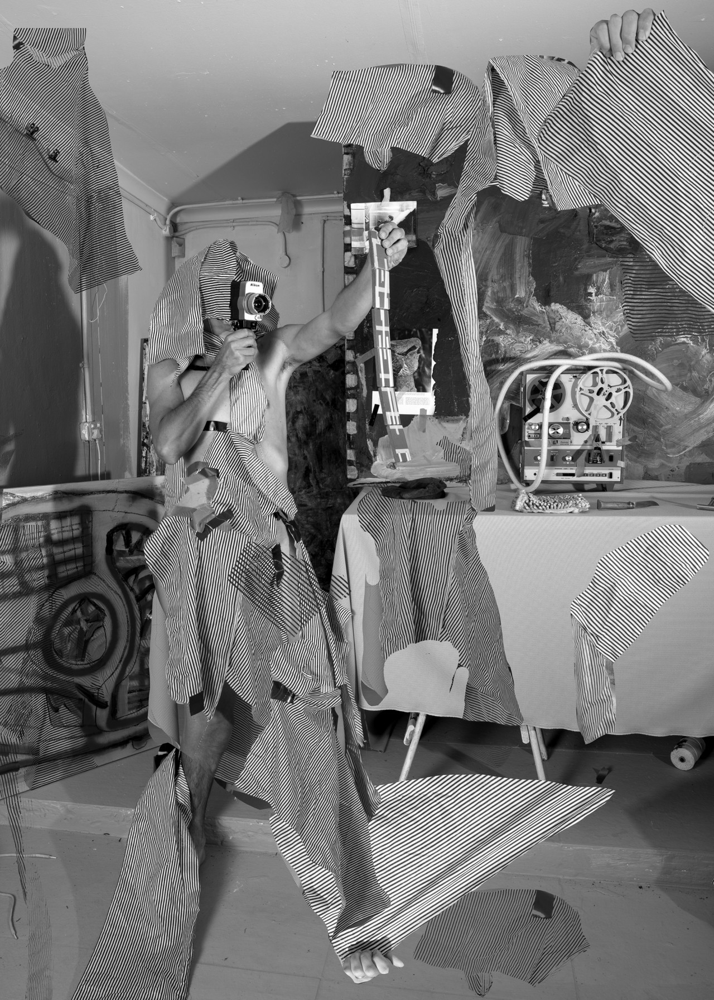

We align with SDG 12: Responsible Consumption and Production, rethinking the way fashion is consumed in a fast-moving world. The rise of fast fashion has made clothing feel temporary, leading to excessive waste, pollution, and overproduction that continues to harm our planet.
With our Digital Wardrobe and Style Quiz, you can stay effortlessly stylish while becoming more mindful of your choices. Instead of constantly buying new pieces, you can explore new ways to style what you already own while reducing your impact on the fast fashion crisis.
Rediscover your wardrobe. Restyle your outfits with creativity. Repair pieces you love and give them a second life. Small changes in how we treat our clothes can create a powerful shift toward sustainability.
Because true style isn’t about having more — it’s about intention, identity, and expressing who you are in a way that lasts.
